Created:
07/07/10. Revised: 05/17/10.
Copyright © 2010 - 2011 by Victor Manta, Switzerland. All rights reserved worldwide |
|
With a stamp pane issued on March 11, 2010, the U.S. Postal Service honored the artistic innovations and achievements of ten abstract expressionists, a group of artists who revolutionized art during the 1940s and 1950s and moved the U.S. to the forefront of the international art scene for the first time. The stamps went on sale March 11, 2010.Abstract expressionism refers to a large body of work that comprised radically different styles, from still, luminescent fields of color to vigorous, almost violent, slashes of paint. In celebration of the abstract expressionist artists of the 20th century, art director Ethel Kessler and noted art historian Jonathan Fineberg (Gutgsell Professor of Art History, University of Illinois at Urbana-Champaign) selected ten paintings to feature on this colorful pane of self-adhesive stamps. Kessler used elements from Barnett Newman’s Achilles (1952) to frame the stamps. The arrangement of the stamps suggests paintings hanging on a gallery wall. For design purposes the sizes of the stamps are not in relative proportion to the paintings. Source.
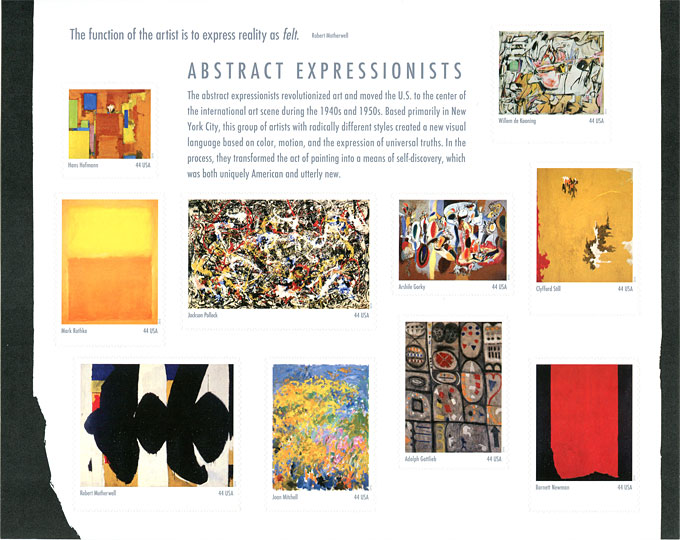
As the readers of this site know it, I'm not a fan of the abstract art, and this is rather an understatement. But nevertheless the presented pane fully deserves our attention, because it shows how the usage of a relatively new technology, I speak about the self-adhesives stamps, can enhance the presentation of the philatelic material.
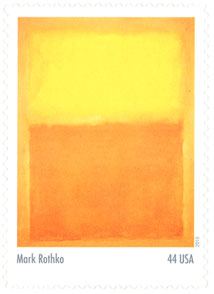
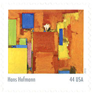
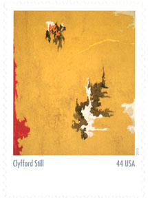
1948-C (1948)
Here we have ten stamps, each one characterized by a different dimension, which is the usual situation in a museum or an exhibition. It is possible to do the same in a traditional manner, on gummed paper, but it is technically more complicated, and less practical for the user.
Not only that the stamps could be placed more or less randomly, but the front space could be also used for a general explanation of the Abstract Impressionism.
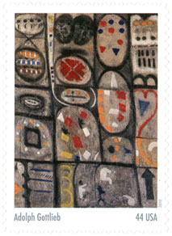
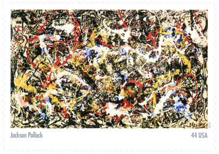
Convergence (1952)
The back of the pane, because it isn't adhesive anymore, was properly used for information about each painter (there are ten of them!) and about the displayed work of art. More info can be found here.
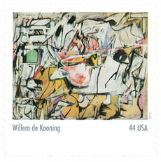
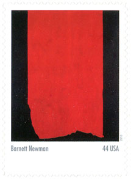
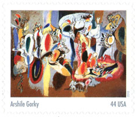
The life is in the Cock's Comb (1944)
By the way, I used these data when I labeled each of the stamps on this page. There is another advantage, that you can keep the pane in your hands, because there isn't a sensitive gum on the back anymore.
To find out more about the artists and about their works you are invited to buy the pane from the USPS. It is available online and it doesn't belong to the top sellers, and therefore it will be available for a while. Just to mention that it is known that the majority of stamp collectors prefers the classical works of art, and for this reason it isn't USPS but countries like Ghana, Maldives and other Grenadines (or rather the dealers behind them) that make money by selling stamps reproducing classical works of art that are found in the US museums. Look for an example here.
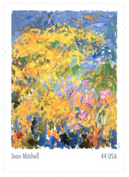
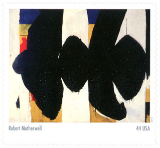
Elegy to the Spanish Republic # 34 (1953-1954)
A note concerning the philosophy of one of the featured artist, Robert Motherwell, who received his BA in philosophy from Stanford, and who is the author of the quotation that appears in the top of the pane: "The function of the artist is to express reality as felt".
There were several streams in arts, and among them: The Realists (Flaubert, Courbet), who expressed the reality as it was, and The Romanticists (Hugo, Delacroix), who expressed it as it should be. Later came The Feeltists (R. Motherwell & Co), but also a current that openly opposed them, the Neo-Romantics. Ayn Rand: "Emotions are not tools of cognition. What you feel tells you nothing about the facts; it merely tells you something about your estimate of the facts. Emotions are the result of your value judgments; they are caused by your basic premises, which you may hold consciously or subconsciously, which may be right or wrong."From the title of his painting (Elegy to the Spanish Republic) one can suppose which were his basic premises. If interested, read the Wiki page that refers to the object of his nostalgia. It is up to the reader to value or not the emotions expressed in the celebrated works of art that are reproduced above.
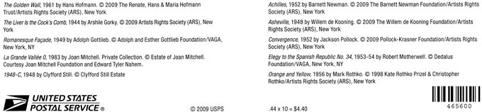
I show above the copyright of the artworks and I remind that, being a non-professional philatelic journalist, I publish low resolution scans of stamps from my personal collection for teaching, in accordance with the paragraphs 1. and 2. of the Article 10 of the Berne Convention for the Protection of Literary and Artistic Works.
Update. In Linn's 2010 US Stamps popularity Poll the Abstract Impressionsts pane was on the 4th-5th places in the Best Design category. In the same poll it was awarded the first place in the Worst Design category. The overal winner was the Adopt a Shelter Pet pane, the only other one that I bought, as being the one that I couldn't resist.
Created:
07/07/10. Revised: 05/17/10.
Copyright © 2010 - 2011 by Victor Manta, Switzerland. All rights reserved worldwide |
|